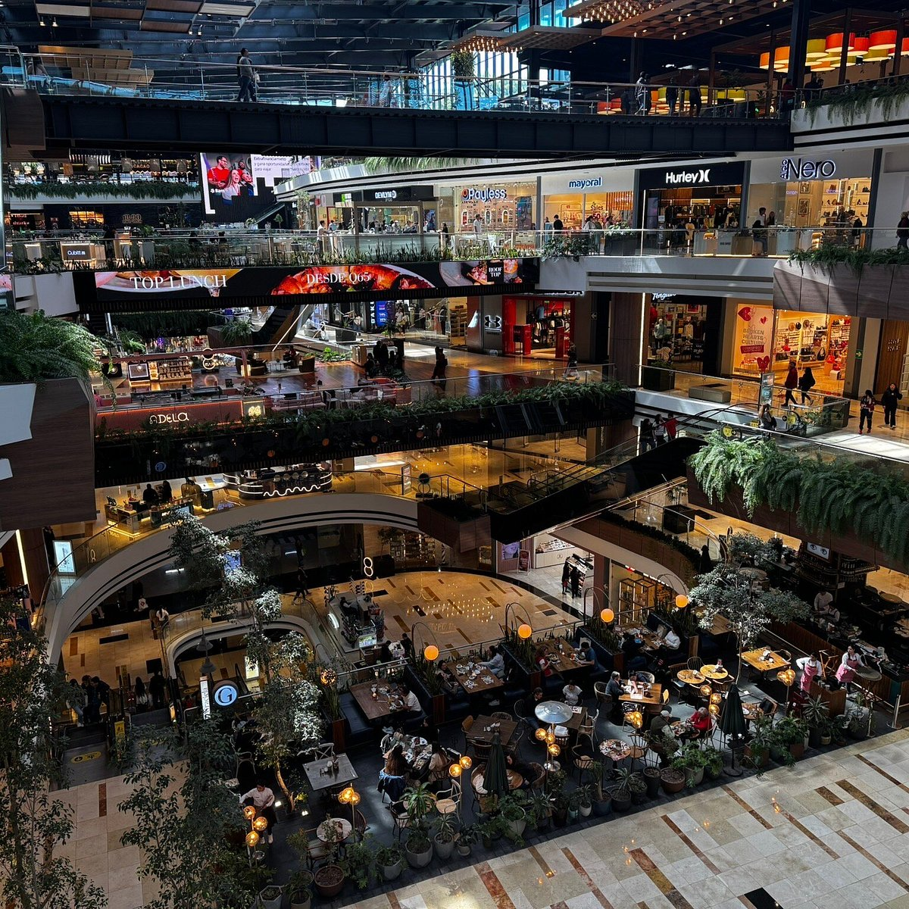
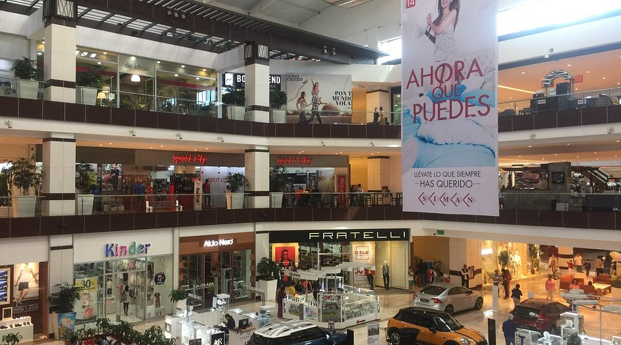
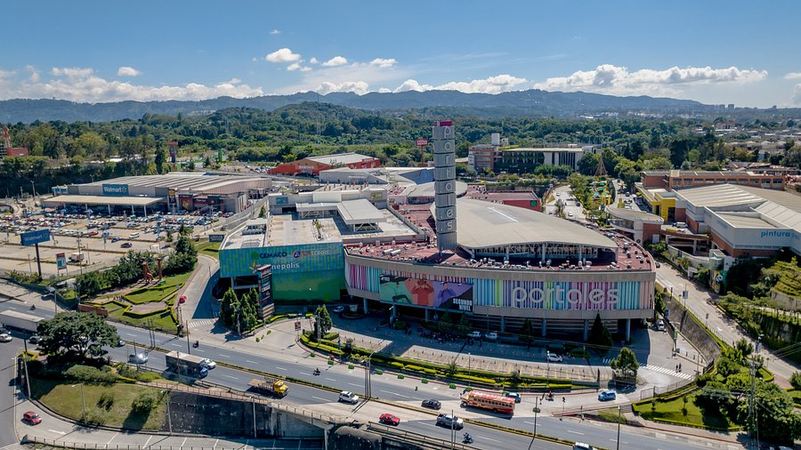

Ciudad Cayalá
Lugar moderno con restaurantes, tiendas y entretenimiento.
★★★★★
Zona 16, Ciudad de Guatemala
Ver ubicación

Oakland Mall
Uno de los centros comerciales más famosos del país.
★★★★☆
Zona 10, Ciudad de Guatemala
Ver ubicación
Miraflores
Centro comercial reconocido por sus tiendas, restaurantes y entretenimiento.
★★★★✩
Zona 11, Ciudad de Guatemala
Ver ubicación

Pradera Concepción
Uno de los centros comerciales más visitados de Guatemala.
★★★★✩
Carretera a El Salvador
Ver ubicación

Portales
Complejo comercial moderno con restaurantes, cine y entretenimiento.
★★★★☆
Zona 17, Ciudad de Guatemala
Ver ubicación